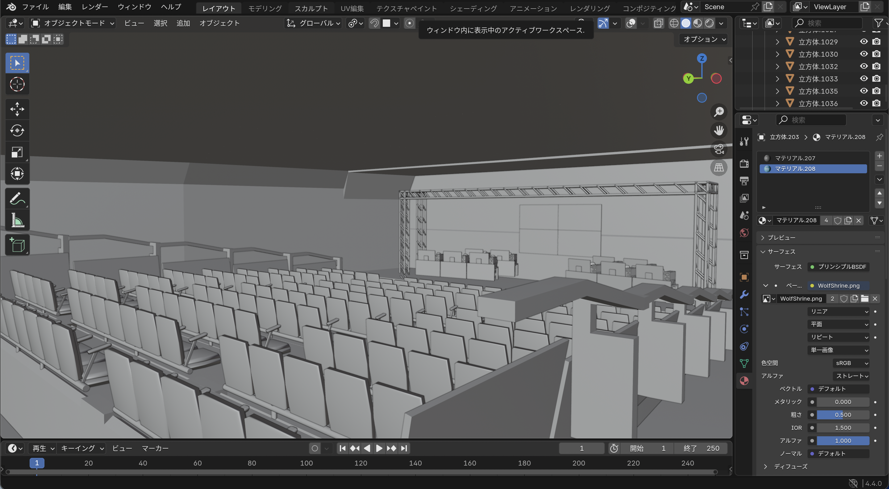
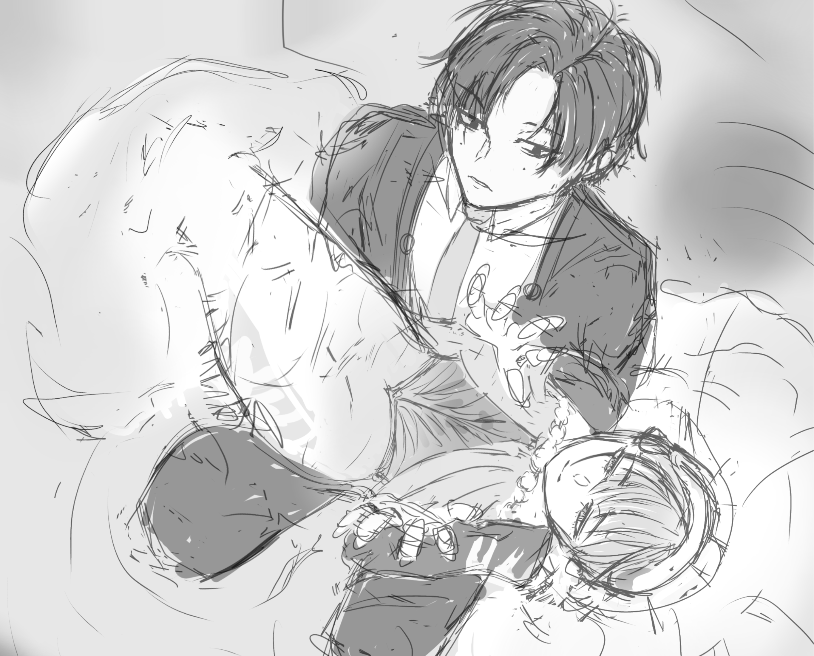

発表内容
自己紹介
- 人となり -
エターナル地元民
言語の履修→英語・ドイツ語（高校で中国語）
部活：中学→卓球・美術/高校→美術・音楽
やってた習い事：ピアノ・空手（NOT極真）
オタクはオタクでもその精神があるだけかも
- 好きなもの -
音楽・ものづくりなど
映 画：The Greatest Showman
漫 画：Mr.マロウブルー（サマミヤアカザ 著）
小 説：三日間の幸福（三秋縋 著）
ソフト：表計算（ExcelよりGoogleスプレッドシート派）
ゲーム：音ゲー・イースシリーズ
その他：服飾、折り紙、写真、ネザーランド・ドワーフ
心理学関連で興味がある分野
下のカラーは学会HPからピックしてきました！
環境心理学
発達心理学
脳神経生理学
エルゴノミクス
制御された幻覚(Anil Seth氏)・環世界
パノプティコン、トランザクショナリズム
生涯発達と生活空間
小脳チャン（^ω^＝^ω^）
好きな曲
STORY TELLER / Half time Old
VALLISTA / sakuzyo
Fight the night / ONE OK ROCK
その他
- やさぐれカイドー / 秋山黄色
- 本日の正体 / NEE
- 神話崩壊 / Hello Sleepwalkers
- 芝居の終焉 / Dios
- Metaphor / Ichika Nito
- Neurotica / Polyphia
- Origin Sin / Tim Henson
- Rapport / キタニタツヤ
- 君が僕を嗤う日 / 中瀬ミル
- シニガミレコード / じん(自然の敵P)
過去制作物
MUSIC
少しずつ切り取って載せてます
3D
web上に挿入してみた（可動）
web上で動かすのをやりたかっただけ。テレビ見てみて
過去成果物(ゲームイベント会場)


動画
イラスト

脳を擬人化しようとして制作開始、細胞の形を反映させたい
下端しか勝たん